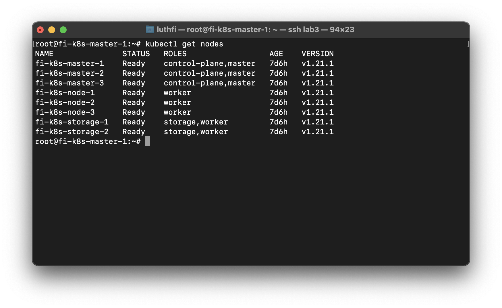

Install Kubernetes cluster multi Master High Availability
Specification : Calico, Containerd, Haproxy, Kubernetes v1.22.x
Lab Topology

First, prepare all VM

All Nodes except LB Nodes
Set mapping hostname
nano /etc/hosts
Install packages containerd
Load overlay and br_netfilter kernal modules.
cat <<EOF | sudo tee /etc/modules-load.d/containerd.conf
overlay
br_netfilter
EOF
sudo modprobe overlay
sudo modprobe br_netfilter
Set these system configurations for Kubernetes networking
cat <<EOF | sudo tee /etc/sysctl.d/99-kubernetes-cri.conf
net.bridge.bridge-nf-call-iptables = 1
net.ipv4.ip_forward = 1
net.bridge.bridge-nf-call-ip6tables = 1
EOF
Apply settings
sudo sysctl --system
Install containerd
sudo apt-get update && sudo apt-get install -y containerd
sudo mkdir -p /etc/containerd
sudo containerd config default | sudo tee /etc/containerd/config.toml
sudo systemctl restart containerd
sudo systemctl enable containerd
Disable SWAP
sudo swapoff -a
sudo sed -i '/ swap / s/^\(.*\)$/#\1/g' /etc/fstab
Install depedency packages
sudo apt update && sudo apt-get install -y apt-transport-https curl
curl -s https://packages.cloud.google.com/apt/doc/apt-key.gpg | sudo apt-key add -
add kubernetes repo
cat <<EOF | sudo tee /etc/apt/sources.list.d/kubernetes.list
deb https://apt.kubernetes.io/ kubernetes-xenial main
EOF
sudo apt update
Install kubectl, kubelet, & kubeadm packages
sudo apt-get install -y kubelet=1.22.1-00 kubeadm=1.22.1-00 kubectl=1.22.1-00
sudo apt-mark hold kubelet kubeadm kubectl
All LB Nodes
Install keepalived & HAproxy packages
sudo apt install keepalived haproxy psmisc -y
Configure HAproxy
Add HAproxy configuration bellow in last line
sudo nano /etc/haproxy/haproxy.cfg
frontend kubernetes
bind *:6443
option tcplog
mode tcp
default_backend kubernetes-master-nodes
backend kubernetes-master-nodes
mode tcp
balance roundrobin
option tcp-check
server fi-k8s-master-1 10.20.10.201:6443 check fall 3 rise 2
server fi-k8s-master-2 10.20.10.202:6443 check fall 3 rise 2
server fi-k8s-master-3 10.20.10.203:6443 check fall 3 rise 2
Restart services
systemctl restart haproxy.service
systemctl status haproxy.service
systemctl enable haproxy.service
Configure keepalived
sudo nano /etc/keepalived/keepalived.conf
Haproxy nodes 1
global_defs {
notification_email {
root@localhost
}
notification_email_from root@localhost
smtp_server localhost
smtp_connect_timeout 30
}
# Script used to check if HAProxy is running
vrrp_script check_haproxy {
script "killall -0 haproxy"
interval 2
weight 2
}
vrrp_instance VI_1 {
state MASTER # MASTER on haproxy-nodes-1, BACKUP on haproxy-nodes-2
interface ens3 # Interface name
virtual_router_id 255
priority 101 # 101 on haproxy, 100 on haproxy2
advert_int 1
authentication {
auth_type PASS
auth_pass 1111
}
unicast_src_ip 10.20.10.101 # IP address of this machine
unicast_peer {
10.20.10.102 # IP address of peer machines
}
virtual_ipaddress {
10.20.10.200
}
track_script {
check_haproxy
}
}
Haproxy nodes 2
global_defs {
notification_email {
root@localhost
}
notification_email_from root@localhost
smtp_server localhost
smtp_connect_timeout 30
}
# Script used to check if HAProxy is running
vrrp_script check_haproxy {
script "killall -0 haproxy"
interval 2
weight 2
}
vrrp_instance VI_1 {
state BACKUP # MASTER on haproxy-nodes-1, BACKUP on haproxy-nodes-2
interface ens3 # Interface name
virtual_router_id 255
priority 101 # 101 on haproxy, 100 on haproxy2
advert_int 1
authentication {
auth_type PASS
auth_pass 1111
}
unicast_src_ip 10.20.10.102 # IP address of this machine
unicast_peer {
10.20.10.101 # IP address of peer machines
}
virtual_ipaddress {
10.20.10.200
}
track_script {
check_haproxy
}
}
Allow a process to bind to a non-local IP address
echo "net.ipv4.ip_nonlocal_bind=1" | sudo tee /etc/sysctl.d/ip_nonlocal_bind.conf
sudo sysctl --system
Restart keepalived
sudo systemctl restart keepalived
sudo systemctl status keepalived
sudo systemctl enable keepalived
Verify Keepalived IP Address
Make sure VRRP IP active only on LB Nodes 1
Only Master-1 node
Initialize the Cluster
sudo nano kubeadm-config.yaml
apiVersion: kubeadm.k8s.io/v1beta2
kind: ClusterConfiguration
kubernetesVersion: stable
controlPlaneEndpoint: "fi-k8s-vrrp-master:6443"
networking:
podSubnet: "10.244.0.0/16"
kubeadm init --config=kubeadm-config.yaml --upload-certs
mkdir -p $HOME/.kube
sudo cp -i /etc/kubernetes/admin.conf $HOME/.kube/config
sudo chown $(id -u):$(id -g) $HOME/.kube/config
Install Calico Networking (CNI)
kubectl apply -f https://docs.projectcalico.org/manifests/calico.yaml
kubectl get pods -n kube-system
All Master nodes except Master-1
Join master nodes
kubeadm join fi-k8s-vrrp-master:6443 --token po9o1t.et1h4u50mov73omo \
--discovery-token-ca-cert-hash sha256:1e0b4eac0402becb5b6ac1a3f1cd52f109f8bfbe32d8a4213a9e37130f67c99b \
--control-plane --certificate-key fa564b2d3dadaebb8d7690dad2c23a427b2eafd409d0731e67a3ab14050a3872
All Worker nodes
Join worker nodes
kubeadm join fi-k8s-vrrp-master:6443 --token po9o1t.et1h4u50mov73omo \
--discovery-token-ca-cert-hash sha256:1e0b4eac0402becb5b6ac1a3f1cd52f109f8bfbe32d8a4213a9e37130f67c99b
Verify All nodes already join
kubectl get nodes

Testing deploy POD
sudo nano nginx.yaml
apiVersion: v1
kind: Pod
metadata:
name: nginx
spec:
containers:
- name: nginx
image: nginx:1.14.2
ports:
- containerPort: 80
Running & deploy POD
sudo kubectl apply -f nginx.yaml
Verification
Next : Install storage cluster ROOK & CEPH in Kubernetes